Desarrollo · Exploración
Tablero de huesitos
Sal a pasear con tu Yunipet. En cada cruce puedes seguir el circuito que ya conoces o gastar lo que has reunido para descubrir adónde lleva otro camino.
Una tirada, paso a paso
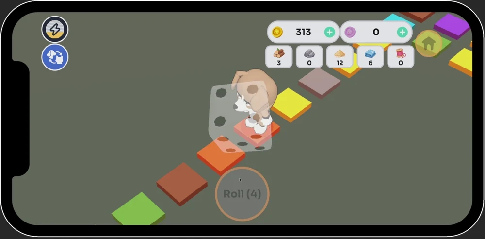
Tira con tu mascota
Cada tirada consume energía del Yunipet activo. El dado marca cuántas casillas recorrerá y el contador baja con cada salto.
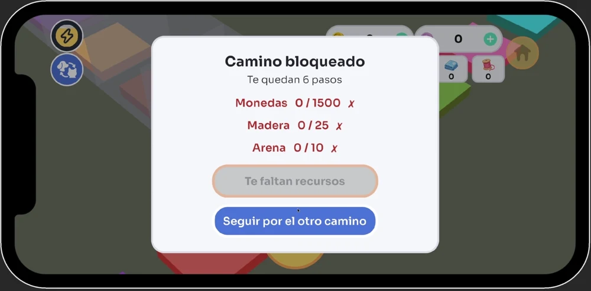
Decide en el cruce
Si aparece un candado, puedes pagar el costo o seguir por el camino abierto. En la grabación quedan seis pasos cuando aparece esa decisión.
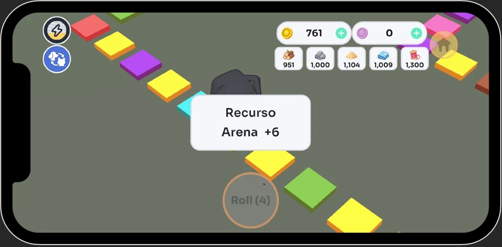
Recoge lo que encuentres
La casilla de llegada decide el resultado. Aquí el Yunipet encuentra seis unidades de arena que se suman a sus materiales para futuros desbloqueos.
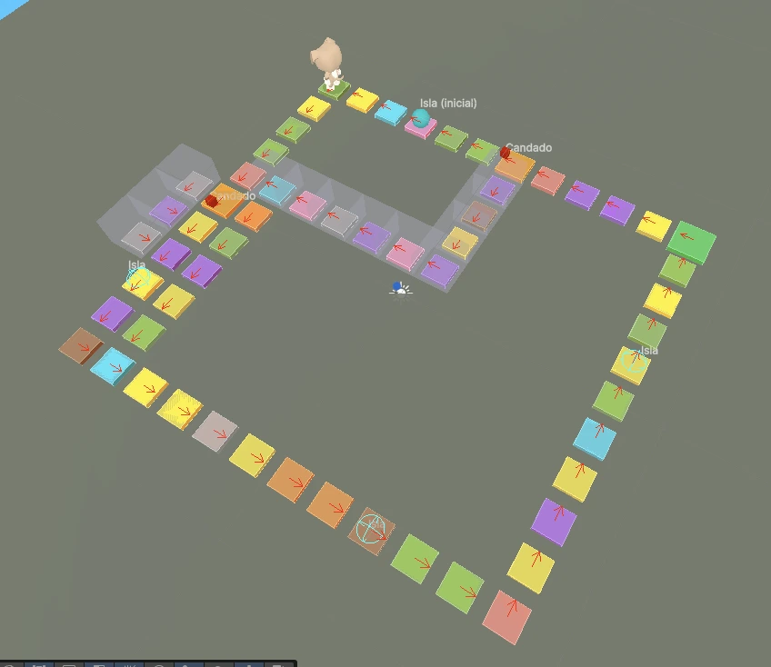
Ampliar mapa ↗Diseño de la mecánica
Un mapa para todas tus mascotas
Si un Yunipet abre un camino, los demás también podrán recorrerlo. Cada mascota conserva su energía, su posición y la vuelta que llevaba. Puedes cambiar de compañero al terminar la tirada.
Las ramas vuelven a conectar con Inicio. Un tramo corto permite completar la vuelta antes. Uno largo ofrece más ocasiones de encontrar materiales o entrar a un minijuego.
Qué puede pasar en una casilla
Estas ilustraciones muestran cómo podrían reconocerse las casillas durante el paseo. El arte sigue en desarrollo. En el gameplay ya puedes ver cómo la mascota recibe monedas y materiales.
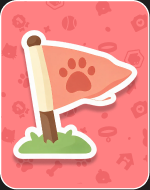
Inicio y vueltas
Tu Yunipet sale de aquí la primera vez que explora. Los caminos vuelven a este punto, incluso si eliges un desvío más largo.
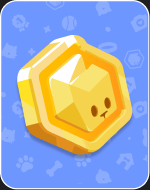
Yunicoins y materiales
Las monedas entran al saldo. En las casillas de recursos recoges madera o arena para abrir rutas y construir habitaciones.
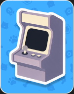
Minijuegos
Al caer aquí, tu Yunipet entra a un reto de Arcade. Al terminar, recibe una recompensa según su desempeño y vuelve al tablero.
Ver las partidas de Escalada y Globos
Escalada32 sGlobos48 s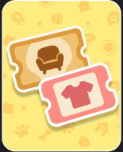
Muebles y ropa
Si encuentras un mueble, puedes colocarlo en tu cuarto. Si consigues una prenda, aparece en el vestuario de tu Yunipet.
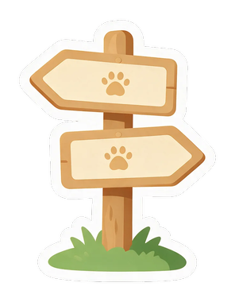
Cruces e islas
En el cruce eliges por dónde gastar los pasos restantes. Algunos desvíos abren más tablero y otros dan acceso a una isla de pesca.
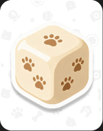
Otra tirada y casillas vacías
La casilla de repetición te deja volver a tirar. En una casilla vacía, tu mascota termina su movimiento y espera la siguiente tirada.
Cómo podría verse el tablero
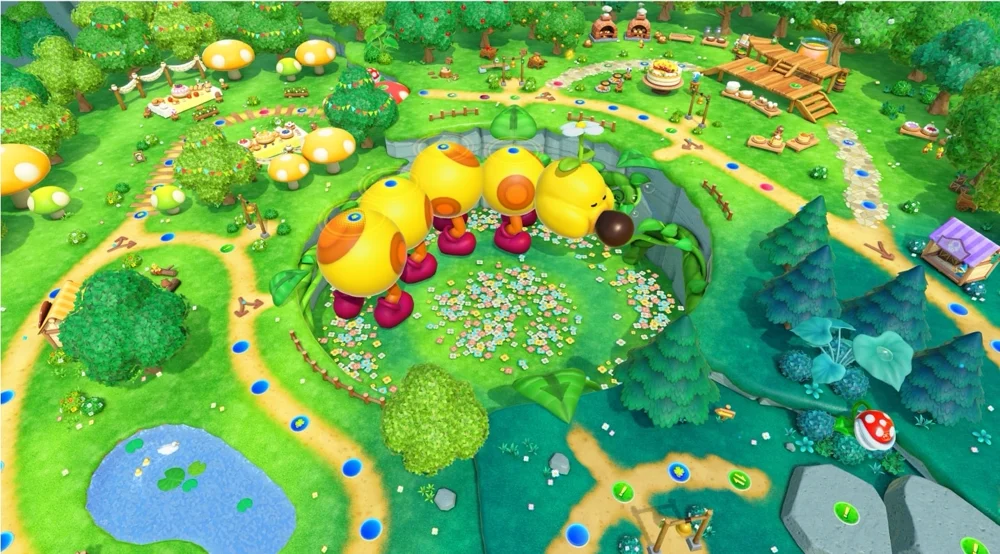
Super Mario Party Jamboree · El bosque
En el bosque de Floruga se ven varios caminos desde arriba. En Yunipets, los pasos que te quedan al llegar a un cruce cuentan para elegir qué tramo explorar.
Imagen de Nintendo ↗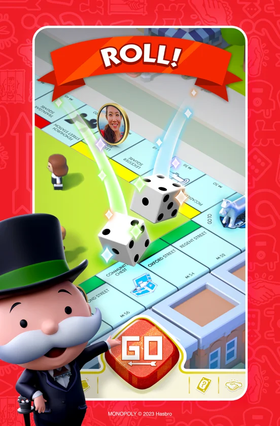
MONOPOLY GO! · La tirada
La tirada, el movimiento de la ficha y el premio se leen de un vistazo. En Yunipets ves qué encontró tu mascota en cuanto acaba el movimiento. Tú decides cuándo volver a tirar.
Imagen de Scopely y Hasbro ↗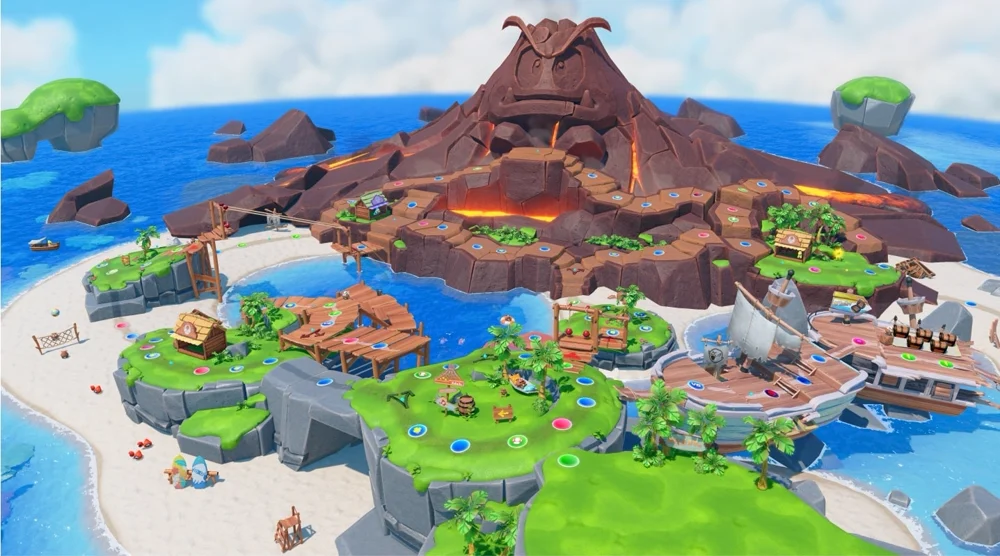
Super Mario Party Jamboree · La isla
En Goomba Lagoon, las casillas se distinguen sobre arena, madera y roca. Para un desvío de pesca de Yunipets, un muelle podría señalar el destino desde el cruce.
Imagen de Nintendo ↗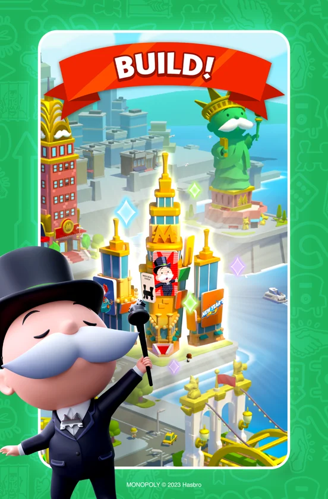
MONOPOLY GO! · La ciudad en miniatura
La estatua y el rascacielos ayudan a orientarse de un vistazo. En Yunipets, un molino o una máquina de arcade podrían cumplir esa función y anticipar qué encontrarás al final del camino.
Imagen de Scopely y Hasbro ↗